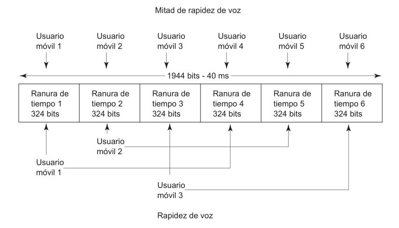
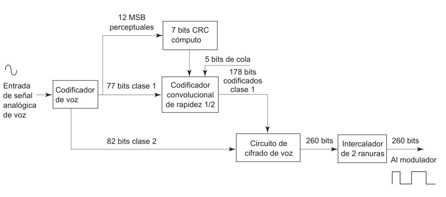
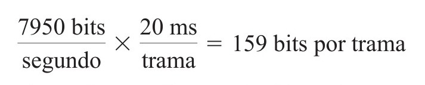
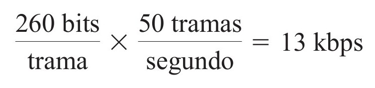
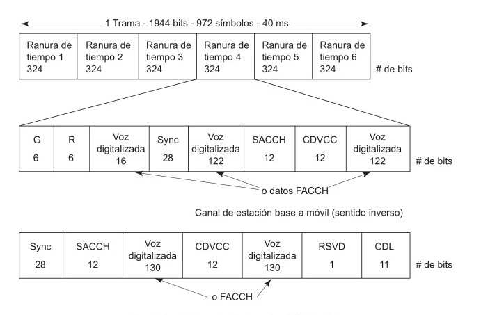
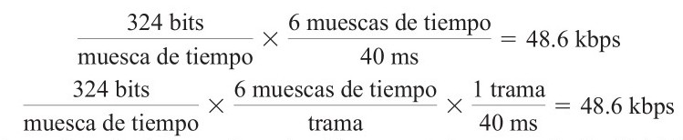
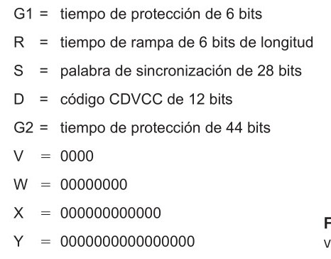
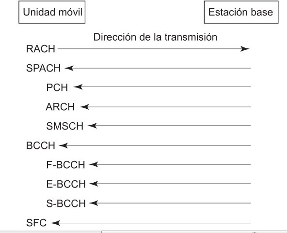
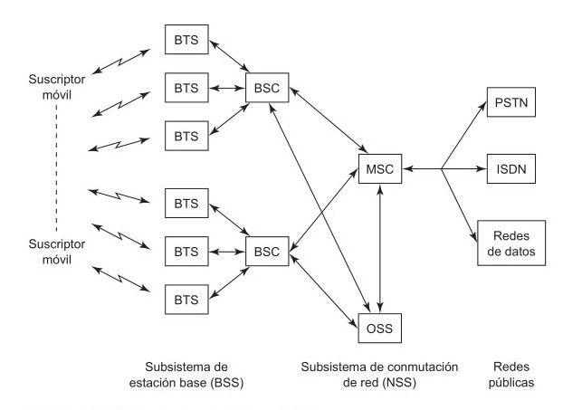

Las empresas telefónicas encaran el problema de una base de clientes que se amplía con rapidez, y al mismo tiempo el espectro asignado de frecuencias permanece sin cambios. La capacidad de usuarios se puede ampliar subdividiendo las células existentes en subcélulas menores (es decir, por división de células) y modificando la distribución de la radiación de las antenas (es decir, por sectorización). Otra restricción grave es el costo de compra de terrenos para sitios de célula en las áreas de máxima densidad de tráfico.
AMPS fue un sistema telefónico celular analógico de primera generación que no estaba diseñado para manejar las demandas de gran capacidad del mundo moderno, en especial en áreas metropolitanas de gran densidad. En consecuencia, se diseñó el sistema Celular Digital de Estados Unidos (USDC, de United States Digital Cellular), que se desarrolló para tratar de sostener una mayor densidad de usuarios dentro de un espectro fijo de frecuencias.
El sistema USDC es compatible con el esquema anterior de asignación de frecuencias AMPS, y se diseñó para usar las mismas frecuencias de portadora, el mismo plan de reutilización de frecuencias y las mismas estaciones base. Para manejar ambos sistemas, las portadoras celulares pueden proporcionar teléfonos USDC a los nuevos clientes, y al mismo tiempo pueden proporcionar servicio a los clientes actuales con teléfonos AMPS. El sistema USDC mantiene la compatibilidad con el AMPS de varias maneras. Por esta causa, USDC también se conoce como AMPS digital (D-AMPS). las portadoras celulares pueden proporcionar teléfonos USDC a los nuevos clientes, y al mismo tiempo pueden proporcionar servicio a los clientes actuales con teléfonos AMPS. El sistema USDC mantiene la compatibilidad con el AMPS de varias maneras. Por esta causa, USDC también se conoce como AMPS digital (D-AMPS). En USDC se usa acceso múltiple por división de tiempo (TDMA) que, como el FDMA divide el espectro total de radiofrecuencias disponibles en canales individuales. Esta técnica de canales de tiempo compartido aumenta en forma importante la capacidad de un sistema, permitiendo que lo usen más suscriptores con unidades móviles en determinada área geográfica.Las ventajas de los sistemas digitales TDMA de acceso múltiple sobre los FDMA normales son las siguientes:
Una trama USDC TDMA consiste en seis ranuras iguales de tiempo, que permiten a cada canal AMPS de 30 kHz manejar a tres usuarios de tarifa completa, o seis de media tarifa. La norma USDC también usa el mismo espectro de frecuencias de 50 MHz y el mismo esquema de duplexión por división de frecuencia que en AMPS.
La Asociación de industrias electrónicas, y la Asociación de la industria de telecomunicaciones (EIA/TIA), en Estados Unidos, normalizó en 1990 el sistema USDC/AMPS de modo dual como Norma provisional 54 (IS-54). Las unidades móviles de modo dual pueden funcionar en modo digital o analógico para la voz, y entrar al sistema con el canal normal de control digital AMPS. Cuando una unidad móvil de modo dual transmite una petición de acceso, indica que es capaz de funcionar en modo digital; El procedimiento de asignación indica el número (la frecuencia) del canal y la ranura específica de tiempo dentro de esa trama particular de canal TDMA. En IS-54 se especifica una frecuencia de bits de 48.6 kbps por cada canal de voz de 30 kHz, dividido entre tres usuarios simultáneos.En muchas áreas rurales de Estados Unidos, los sistemas de teléfono celular analógico sólo usan los 666 canales originales AMPS. En estas áreas se pueden agregar los canales USDC en el espectro ampliado de frecuencias (667 a 832) para soportar seguimientos de llamada para los teléfonos USDC que entran al sistema desde otras áreas. En las áreas urbanas de alta densidad, ciertas bandas de frecuencia se están convirtiendo en forma gradual, una por una, a la norma digital USDC, para ayudar a aliviar la congestión de tráfico.
La transición exitosa y uniforme de sistemas celulares analógicos a digitales que usan la misma banda de frecuencias fue una de las principales consideraciones en el desarrollo de la norma USDC.
Canales de control USDCLa norma USDC IS-54 especifica los mismos 42 canales de control primariosque los de AMPS, y 42 canales adicionales de control, llamados canales de control secundarios. Así, USDC ofrece el doble de canales de control que AMPS y, en consecuencia, es capaz de proporcionar el doble de la capacidad de tráfico de canales de control dentro de determinada área de mercado. Además, para mantener la compatibilidad con los sistemas actuales AMPS de teléfono celular, los canales de control primarios de sentido directo y sentido inverso, en los sistemas celulares USDC, usan las mismas técnicas de señalización y el mismo esquema de modulación (FSK binaria) que AMPS.
Canal de voz digital USDCAl igual que en AMPS, a cada canal de voz USDC se le asigna un ancho de banda de 30 kHz en los enlaces en sentido directo e inverso. Sin embargo, en USDC cada canal de voz puede sostener hasta a tres usuarios móviles al mismo tiempo, mediante un sistema de modulación digital y acceso múltiple por división de tiempo (TDMA) llamado celular digital norteamericano (NADC, de North American Digital Cellular). Cada canal de radiofrecuencia para voz consiste en una trama TDMA de 40 ms, formada por seis ranuras de tiempo con 324 bits cada una.
Un ejemplo en la imagen el usuario móvil 1 ocupa las ranuras de tiempo 1 y 4; el usuario 2, la 2 y 5, y el usuario 3, la 3 y 6. En la media tarifa, cada usuario ocupa una ranura de tiempo por trama.
Cada ranura de tiempo de cada trama USDC de canal de voz contiene cuatro canales de datos: tres para control y uno para voz digitalizada y datos de usuario. El canal de tráfico digital dúplex (DTC, de digital traffic channel) conduce información de voz digitalizada, y consiste en un canal de tráfico digital en sentido inverso (RDTC, de reverse digital traffic channel) y un canal de tráfico digital en sentido directo (FDTC, de forward digital traffic channel) que conduce información de voz digitalizada o datos de usuario. Verificación digital codificada por código de colores. El objetivo del código de colores CDVCC es proporcionar identificación de canal compartido, parecida a la señal SAT transmitida en el sistema AMPS. La CDVCC es un mensaje de 12 bits transmitido en cada ranura de tiempo, y consiste en un número de código de color de voz digital de 8 bits, de 1 a 255, seguido por 4 bits adicionales de codificación obtenidos de un código de Hamming acortado. Canal lento para control asociado es un canal de señalización para transmitir mensajes de control y supervisión entre la unidad digital móvil y la estación base, mientras la unidad móvil está ocupada con una llamada. Este canal conduce diversa información de control y de supervisión entre la unidad móvil y la estación base, por ejemplo, los cambios de nivel de potencia de comunicación y peticiones de transferencia. También se usa el SACCH en la unidad móvil para informar mediciones de intensidad de señal de las estaciones base vecinas para que, cuando sea necesario, la estación base pueda iniciar una transferencia móvil asistida (MAHO, de mobile-assisted handoff).El FACCH es un segundo canal de señalización para transmitir mensajes de control y supervisión especializada, y de tráfico, entre la estación base y las unidades móviles. Es una transmisión del tipo de silencio y ráfaga que, cuando se transmite, sustituye la información digitalizada de voz por mensajes de control y supervisión dentro de una ranura de tiempo del suscriptor. Sin embargo, la información digitalizada de voz se protege en cierto modo, evitando que toda una transmisión de voz digitalizada sea sustituida por datos FACCH. La velocidad neta de transmisión digitalizada de voz de 13 kbps no se puede reducir a menos de 3250 bps en determinada ranura de tiempo. No hay campos dentro de una ranura normal de tiempo, que la identifiquen como voz digitalizada o como mensaje FACCH. Este canal soporta transmisiones de tonos de toque de frecuencia múltiple y tono dual (DSTMF, de dual-tone multiple-frequency), pide instrucciones de liberar, instrucciones instantáneas de colgar y transferencia móvil asistida, o peticiones de estado de unidad móvil.
El control de errores de canal para los datos digitalizados de voz usa tres mecanismos para minimizar esos errores:
Diagrama de bloques de un codificador de voz USDC de canal digital de voz.
En el sistema USDC, las señales analógicas de voz que llegan se muestrean primero, y a continuación se convierten a una PCM binaria en un codificador de voz especial, llamado codificador lineal predictivo de suma vectorial excitadora(VSELP, de vector sum exciter linear predictive), o codificador lineal predictivo de excitación estocástica (SELP, de scochastically excited linear predictive). Los codificadores lineales predictivos usan codificadores de voz en dominio del tiempo, que tratan de extraer las características más importantes de la forma de onda de voz variable en el tiempo.
Como hay muchos órdenes predecibles en los patrones de conversación, es posible, mediante algoritmos avanzados, comprimir las muestras binarias y transmitir la corriente de bits que resulta a una velocidad de 13 kbps. Se agregan bits de detección y corrección de errores (EDC, de error-detection and correction) a las señales de voz comprimidas digitalmente, para reducir los efectos de la interferencia, llevando la velocidad final de datos de voz a 48.6 kbps.
Los codificadores VSELP tienen salida de 7950 bps, y producen una trama de voz cada 20 ms, es decir
Los 159 bits incluidos en cada trama de codificador de voz se dividen en dos clases, según la importancia con que se perciben. Los 12 bits más significativos de clase 1 se codifican en bloque mediante un código de detección de errores CRC de 7 bits, para asegurar que los bits más significativos del codificador de voz se decodifiquen con baja probabilidad de error.
Después de codificar los 159 bits, cada trama de código de voz se convierte a 260 bits codificados de canal por trama, en un codificador de convolucional de rapidez 1/2, y se transmiten 50 tramas por segundo.  En la imagen anterior (fig.1) muestra la ranura de tiempo y el formato de trama para los enlaces de sentido directo (estación base a unidad móvil) e inverso (unidad móvil a estación base) de un canal digital de voz USDC. Cada ranura de tiempo porta datos digitales de voz intercalados, de las dos tramas adyacentes que salen del codificador de voz.
En el canal de sentido inverso, cada ranura de tiempo contiene dos ráfagas de 122 bits de voz digitalizada cada uno, y una ráfaga de 16 bits, haciendo un total de 260 bits de voz digitalizada por trama. El tiempo de protección sólo está en las ranuras de tiempo del canal de sentido inverso, para evitar el traslape de las ráfagas recibidas, debido al tiempo de tránsito de la señal de radio. Si se manda un FACCH en lugar de datos de voz, una ranura de tiempo de datos de codificación de voz se sustituye con un bloque de 260 bits de datos FACCH. En el canal de sentido directo cada ranura de tiempo contiene dos ráfagas de 130 bit de datos de voz digitalizada (o datos FACCH, si no se está mandando voz digitalizada) para hacer un total de 260 bits por trama. Además, cada trama de canal de sentido directo contiene 28 bits de sincronización, 12 bits de datos SACCH, 12 bits CDVCC y 12 bits reservados, para hacer un total de 324 bits por ranura de tiempo. Los canales de voz, tanto de sentido directo como inverso, tienen una velocidad de transmisión de datos de: Las ráfagas acortadas se transmiten cuando una unidad móvil comienza a funcionar en una célula de mayor diámetro, porque se desconoce el tiempo de propagación entre la unidad y la base. En la siguiente Imagen se observa el Formato de canal de voz digital con ráfaga acortada USDC
Una unidad móvil transmite ranuras de ráfaga acortada, hasta que la estación base determina el desplazamiento requerido en el tiempo. El retardo predeterminado entre las ranuras de recepción y transmisión es de 44 símbolos, que da como resultado una distancia máxima de 72 millas para una célula IS-54, a la cual una estación móvil pueda operar en la célula.
Esquema de modulación digital USDCPara lograr una velocidad de transmisión de 48.6 kbps en un canal de voz AMPS de 30 kHz, se requiere una eficiencia de ancho banda (espectral) de 1.62 bps/Hz, bastante lejos de las posibilidades de la FSK binaria. Sin embargo, los canales USDC de voz y de control usan una técnica de modulación por conmutación de fase, simétrica diferencial, llamado DQPSK π/4, o modulación por conmutación cuadrifásica diferencial π/4 (DQPSK), que ofrece varias ventajas en un ambiente de radio móvil, como mejor rechazo de canal común y mejor eficiencia de ancho de banda.
En un modulador DQPSK π/4, los bits de datos se dividen en dos canales paralelos que producen un desplazamiento específico de fase en la portadora analógica y, como hay cuatro pares posibles de bits, hay cuatro desplazamientos posibles de fase si se usa un modulador I/Q en cuadratura. Las señales PSK, después de la conformación de pulso, se pasan por una técnica de modulación lineal, que requiere amplificación lineal para conservar la forma del pulso. El uso de conformación de pulso con DQPSK π/4 permite la transmisión simultánea de tres señales de voz separadas, de 48.6 kbps en un ancho de banda de 30 kHz. Canal de control digital USDCLa norma IS-54 especifica tres clases de canales: analógico de control, analógico de voz y un canal de control digital FSK binario de 10 kbps (DCCH, de digital control channel). C (IS-136) menciona las mismas tres clases de canales, y una cuarta: un canal de control digital con una frecuencia de señalización de 48.6 kbps, en los canales de control exclusivos de USDC.
Al agregar un canal de control digital, una unidad móvil puede funcionar por completo en el dominio digital: usar el canal de control digital para seleccionar sistema y célula, y para entrada a canal, y el canal digital de voz para transmisiones digitalizadas de voz. La IS-136 detalla la funcionalidad exacta del canal USDC de control digital. La versión inicial de la IS-136 fue la versión 0, que desde entonces se ha actualizado por la revisión A. La versión 0, funciones nuevas que se agregaron al sistema telefónico celular digital USDC son mayores servicios al usuario, como mensajes cortos y presentación del número telefónico de la llamada que entra, modo de reserva, que permite una mayor duración de baterías del aparato telefónico cuando no se use, servicio de sistema privado o residencial y mayor seguridad y validación contra fraudes.
La versión más reciente de la IS-136 revisión A, fue desarrollada para proporcionar también muchas funciones y servicios nuevos, al introducir un codificador ampliado de voz, activación al vuelo en donde se permite que los operadores de la red programen información en los teléfonos en forma directa por el aire, identificación de nombre y número de quien llama, mayor libertad de manos y acceso prioritario a los canales de control.
Canales LógicosEl nuevo canal digital de control incluye varios canales lógicos con distintas funciones, como el canal de acceso aleatorio (RACH, de random access channel); el canal de control de emisión (BCCH, de broadcast control channel) y el canal de retroalimentación en canal compartido (SCF, de shared channel feedback).
A continuación se observan los canales lógicos de la norma IS-136
 Canal de acceso aleatorio (RACH).Este canal lo usan las unidades móviles para pedir acceso al sistema telefónico celular. Este canal lo usan las unidades móviles para pedir acceso al sistema telefónico celular. El RACH es unidireccional. También transmite mensajes que proporcionan información sobre validación, actualizaciones de parámetros de seguridad y servicio de mensajes cortos (SMS, de short message service) de punto a punto.
Canal SMS punto a punto, voceo y respuesta de acceso (SPACH)La información transmitida por el canal SPACH incluye tres subcanales lógicos separados: mensajes SMS punto a punto, mensajes de voceo y mensajes de respuesta de acceso. Este canal puede llevar mensajes relacionados a una sola unidad móvil o a pequeños grupos de unidades móviles, y permite dividir mensajes mayores en bloques más pequeños para su transmisión.
El canal de voceo (PCH, de paging channel)Es un subcanal del canal lógico del SPACH. Los mensajes como actualizaciones de conteo e historial de llamadas y actualizaciones de datos secretos compartidos que se usan en procesos de validación y de cifrado también se mandan por el PCH.
El canal de respuesta de acceso (ARCH, de access response channel)Es un subcanal del canal lógico del SPACH. Los mensajes como actualizaciones de conteo e historial de llamadas y actualizaciones de datos secretos compartidos que se usan en procesos de validación y de cifrado también se mandan por el PCH.
El canal SMS o SMSCH se usa para entregar mensajes cortos de punto a punto a una estación móvil específica. Sin embargo, no se soporta el SMS donde una estación base puede emitir un mensaje corto dirigido a varias unidades móviles, en la norma IS-136.Canal de control de emisión (BCCH)
El BCCH es una transmisión unidireccional de la estación base a la unidad móvil, que comparten todas las unidades móviles. El canal de control de emisión rápida (F-BCCH) Emite parámetros de estructura del canal digital de control (DCCH), que incluyen información acerca de la cantidad de ranuras de tiempo F-BCCH, E-BCCH y S-BCCH, en la trama DCCH. También, el F-BCCH incluye información acerca de los parámetros de acceso, con la información necesaria para validación y cifrados, e información de los intentos de acceso de la unidad móvil, como la cantidad de intentos de acceso del número, tamaño de la ráfaga de acceso, nivel de potencia en acceso inicial e indicación de si la célula está protegida o no. El canal de control de emisión extendida (E-BCCH) Conduce información acerca de las celdas vecinas analógicas y TDMA, y mensajes opcionales, como información de emergencia, mensajes de hora y fecha, y los tipos de servicios que soportan las células vecinas. El canal de control de emisión SMS (S-BCCH) Es un canal lógico para mandar mensajes cortos a unidades móviles individuales. Canal de retroalimentación compartida de canal (SCF) Este canal se usa para soportar la operación de canales de acceso aleatorio, proporcionando información acerca de cuáles ranuras de tiempo de la unidad móvil se pueden usar para intentos de accesoA principios de la década de 1980, los sistemas telefónicos celulares analógicos tuvieron un periodo de rápido crecimiento en Europa Occidental, en especial en Escandinavia y en el Reino Unido, y en menor grado en Francia y Alemania. En 1989 fue transferida la responsabilidad de la GSM al Instituto Europeo de Normas de Telecomunicación (ETSI, de European Telecommunication Standards Institute) y en 1990 se publicó la fase I de las especificaciones GSM.
El servicio comercial GSM comenzó en 1991, y para 1993 había 36 redes GSM en 22 países. Hoy, existen sistemas GSM en todos los continentes, y el significado actual de GSM es Global System for Mobile Communications, Sistema global de comunicaciones móviles. El GSM es un sistema telefónico celular de segunda generación, desarrollado al principio para resolver los problemas de fragmentación inherentes a los sistemas de primera generación en Europa. El GSM fue el primer sistema telefónico celular totalmente digital, diseñado para usar los servicios de la ISDN (red digital de servicios integrados) para proporcionar una amplia gama de servicios a la red Servicios de GSMDesafortunadamente, las limitaciones de ancho de banda de canal y de costo evitan que el GSM funcione a la velocidad básica de datos de 64 kbps de ISDN.
Los servicios telefónicos GSM se pueden clasificar en forma amplia en tres categorías: servicios de portador, teleservicios y servicios suplementarios. Se ofrece una amplia gama de servicios de datos por GSM, donde los usuarios pueden mandar y recibir datos hasta con 9600 bps a suscriptores en las redes POTS (plain old telephone service, servicio telefónico antiguo simple), ISDN, red pública de datos de paquetes conmutados (PSPDN, de Packet Switched Public Data Network), y red pública de datos de circuitos conmutados (CSPDN, de Circuit Switched Public Data Network (CSPDN), mediante diversos métodos y protocolos de acceso, como X.25. Entre otros servicios de datos GSM están facsímil de grupo 3, según la recomendación T.30 de ITU-T. Una función única de GSM que no existe en los sistemas analógicos anteriores es el servicio de mensajes cortos (SMS, de Short Message Service), que es bidireccional para mandar mensajes alfanuméricos hasta de 160 bytes de longitud. Arquitectura del sistema GSMConsiste en tres subsistemas principales interconectados, que interaccionan entre sí y con los suscriptores a través de interfaces especificadas de red.
Los tres subsistemas principales del GSM son subsistema de estación base (BSS, de Base Station Subsystem), subsistema de red y conmutación (NSS, de Network and Switching Subsystem) y subsistema de soporte operacional (OSS, de Operational Support Subsystem).
Aveces se conoce al BSS como el subsistema de radio, porque proporciona y administra rutas de transmisión en radiofrecuencia entre las unidades móviles y el centro móvil de conmutación (MSC, de mobile switching center). Cada BSS consiste de muchos controladores de estación base (BSC, de base station controller) que se usan para conectar el MS con el NSS a través de uno o más MSC.Subsistema de radio GSM
El sistema GSM fue desarrollado en forma original para 200 canales dúplex por célula, con frecuencias de transmisión en la banda de 900 MHz; La banda de 890 a 915 MHz se usa para transmisiones de unidad móvil a estación base (transmisiones de enlace en sentido inverso), y la banda de frecuencias de 935 a 960 MHz se usa para transmisión de estación base a unidad móvil (transmisiones de enlace en sentido directo). Las bandas de frecuencias de sentido directo e inverso disponibles se subdividen en canales de voz de 200 kHz de ancho, llamados números absolutos de canal de radiofrecuencia (ARFCN, de absolute radio-frequency channel number). Cada uno de los suscriptores de canal ARFCN ocupan una ranura única de tiempo en la trama TDMA. La radiotransmisión en ambas direcciones es a la velocidad de 270.833 kbps, con modulación por conmutación mínima gaussiana (GMSK, de Gaussian minumum shift keying), con una velocidad de transmisión efectiva de canal de 33.833 kbps por usuario